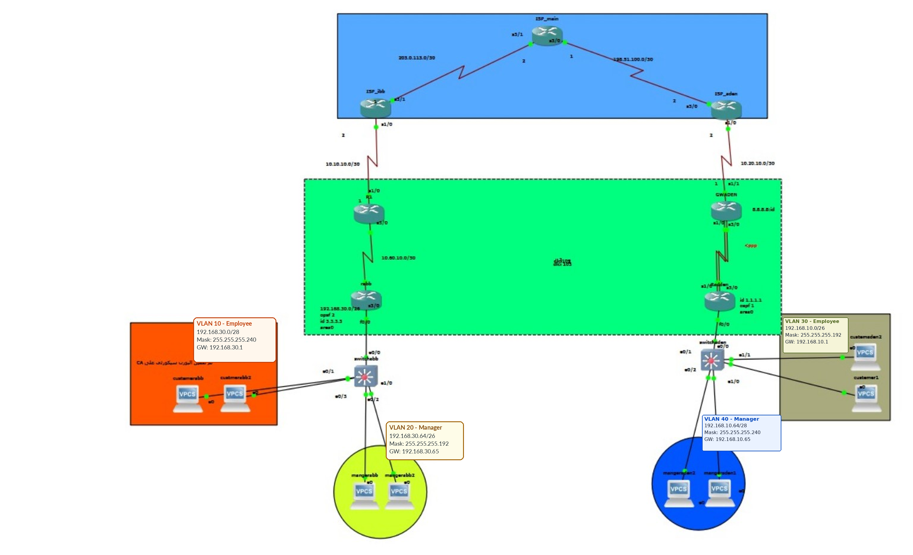
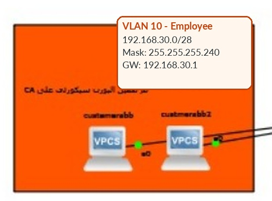
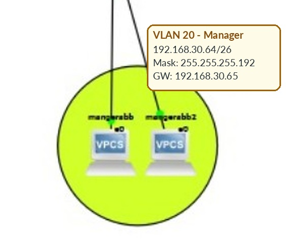
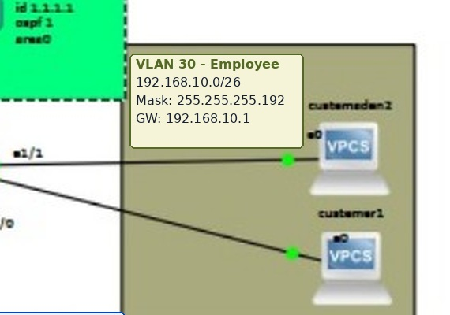
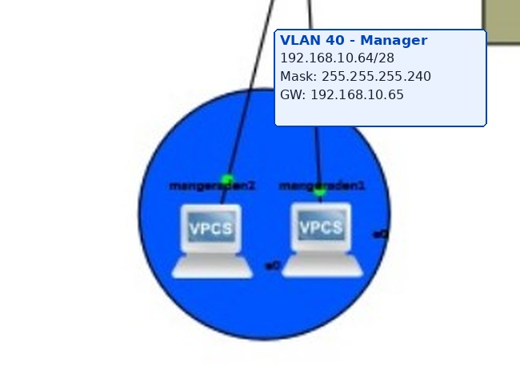

في عصر التحول الرقمي، تعتمد المؤسسات الكبرى على بنية تحتية شبكية قوية تضمن نقل البيانات بسرعات عالية وبمستوى أمان لا يقبل المساومة. يمثل هذا المشروع نموذجاً متكاملاً لتصميم وبناء شبكة واسعة النطاق (WAN) تربط بين فرعين رئيسيين في مدينتي (إب) و(عدن) من خلال بنية تحتية تدار بواسطة مزودي خدمة الإنترنت (ISPs).
تم تصميم هذه الشبكة لتكون قابلة للتوسع (Scalable)، وذات موثوقية عالية (Reliable)، حيث تم دمج بروتوكولات التوجيه الديناميكي المتقدمة مع تقنيات العزل الوهمي لحماية بيانات الأقسام المختلفة.
الأهداف الرئيسية للمشروع:
لتحقيق أهداف المشروع، تم استخدام طيف واسع من بروتوكولات الشبكات التي تعمل في طبقات مختلفة من نموذج (OSI). التقرير التالي يفصل كل تقنية ودورها المحوري في الشبكة:
فكرة العمل: تعتبر تقنية VLSM بمثابة "تجزئة لشبكة تم تجزئتها مسبقاً" (Subnetting a Subnet). في التوزيع التقليدي، يكون قناع الشبكة (Subnet Mask) ثابتاً لجميع الشبكات الفرعية، مما يؤدي إلى إهدار هائل في عناوين الـ IP. أما في VLSM، فإننا نخصص قناع الشبكة بناءً على الاحتياج الفعلي لعدد الأجهزة في كل قسم.
التطبيق في المشروع: استخدمنا هذه التقنية بذكاء لتوفير العناوين. على سبيل المثال:
/30 (255.255.255.252) الذي يوفر بالضبط عنوانين متاحين للاستخدام، بدلاً من استخدام /24 الذي سيهدر 252 عنواناً./26 أو /27 أو /28 بناءً على عدد موظفي وعملاء كل قسم (المدراء والعملاء في إب وعدن)، مما حقق أعلى كفاءة هندسية لتوزيع العناوين.تم استخدام VLANs لتقسيم الشبكة المحلية في كل من فرعي إب وعدن إلى شبكتي Manager وEmployee. وفق تسمية الأدوار التي أكدها صاحب المشروع، VLAN 10 في إب وVLAN 30 في عدن مخصصتان لـ Employee، بينما VLAN 20 في إب وVLAN 40 في عدن مخصصتان لـ Manager. يقلل التقسيم من نطاق البث ويفصل الأقسام منطقيًا. استُخدم Router-on-a-Stick للتوجيه بين VLANs عبر واجهات فرعية؛ وتظل أسماء VLAN التشغيلية بحاجة إلى مطابقة مع الملف الأصلي غير المتوفر.
بروتوكول OSPF (Open Shortest Path First) يعمل في طبقة الشبكة، ويقوم بتبادل معلومات المسارات بين الروترات لبناء خريطة كاملة للشبكة. تم استخدامه هنا لربط شبكات فروع المؤسسة (Area 0) لضمان توجيه ديناميكي سريع يستجيب لأي انقطاع في الروابط، محققاً التوافرية العالية.
تُعد تقنية MPLS العصب الرئيسي لشبكة مزودي الخدمة في هذا المشروع. تضيف MPLS ملصقًا للحزم وتتيح للراوترات داخل شبكة المزود تمريرها اعتمادًا على الملصقات وفق جداول التبديل. في هذا المشروع، تُستخدم مخرجات LDP وجدول MPLS Forwarding Table كأدلة على عمل آلية توزيع الملصقات وتمريرها. لم يتضمن التقرير قياسات أداء مقارنة، لذلك لا ندّعي مقدارًا محددًا من التحسن في السرعة أو استهلاك المعالج.
تم استخدام PPP مع CHAP للتحقق من هوية الطرف المقابل عبر آلية التحدي والاستجابة، دون إرسال كلمة المرور نفسها كنص واضح. CHAP لا يعني تشفير كل بيانات الوصلة؛ لذلك يجب عدم وصفه على أنه قناة تشفير للبيانات.
تسمح تقنية Multilink PPP بتجميع وصلات فعلية متوافقة ضمن واجهة منطقية واحدة. وتُظهر أحدث مخرجات الراوتر Radden واجهة Multilink1 بعنوان 10.70.10.2 وحالة up/up. لم يتوفر ملف المحاكاة أو إعدادات التجميع الكاملة للتحقق من أعضاء الحزمة الفعليين.
يعرض الشكل التالي مخطط المشروع الأصلي مع تحديث تسميات عناوين الشبكات وأقنعة الشبكة والبوابات وفق المعلومات المؤكدة. تم الحفاظ على بنية الطوبولوجيا الأصلية، وتوفير تكبيرات من النسخة نفسها لتسهيل قراءة مناطق VLAN. كما تتوفر نسخة المصدر غير المعدلة في مجلد topology.


192.168.30.0/28 — البوابة 192.168.30.1

192.168.30.64/26 — البوابة 192.168.30.65

192.168.10.0/26 — البوابة 192.168.10.1

192.168.10.64/28 — البوابة 192.168.10.65
192.168.10.0/26 وبوابة 192.168.10.1، وVLAN 40 هي Manager بشبكة 192.168.10.64/28 وبوابة 192.168.10.65. تظهر أحدث مخرجات الواجهات أن الواجهتين الفرعيتين FastEthernet0/0.30 وFastEthernet0/0.40 بحالة up/up.192.168.30.0/28 وبوابة 192.168.30.1، وVLAN 20 هي Manager بشبكة 192.168.30.64/26 وبوابة 192.168.30.65 وفق آخر تأكيد من صاحب المشروع.ISP_Ibb وMain_ISP وISP_Aden. يسجل التقرير أدلة على جيران MPLS LDP وعناوين معرفات LDP/Loopback. يجب ربط كل ادعاء بنتيجة الفحص المقابلة، وعدم افتراض قياسات أداء لم تُسجّل.! === Aden Switch — normalized role labels for public documentation ===
! The original simulator file is unavailable; verify running VLAN database if recovered.
conf t
vlan 30
name Employee
exit
vlan 40
name Manager
exit
int e0/0
switchport trunk encapsulation dot1q
switchport mode trunk
exit
int range e1/0 , e1/1
switchport mode access
switchport access vlan 40
exit
int range e0/1 , e0/2
switchport mode access
switchport access vlan 30
exit
! === Router Aden / Radden — normalized from latest interface evidence ===
conf t
interface FastEthernet0/0
no ip address
no shutdown
exit
interface FastEthernet0/0.30
encapsulation dot1Q 30
ip address 192.168.10.1 255.255.255.192
no shutdown
exit
interface FastEthernet0/0.40
encapsulation dot1Q 40
ip address 192.168.10.65 255.255.255.240
no shutdown
exit
! Latest show ip interface brief reports Multilink1 = 10.70.10.2 up/up.
! Full bundle/member configuration was not available for re-verification.
router ospf 1
router-id 1.1.1.1
network 10.70.10.0 0.0.0.3 area 0
network 192.168.10.0 0.0.0.63 area 0
! Verify whether 192.168.10.64/28 is advertised by OSPF in the actual running configuration.
exit! === Ibb Switch ===
conf t
vlan 10
name Employee
exit
vlan 20
name Manager
exit
interface e0/0
switchport trunk encapsulation dot1q
switchport mode trunk
exit
interface range e0/1 , e0/3
switchport mode access
switchport access vlan 10
exit
interface range e0/2 , e1/0
switchport mode access
switchport access vlan 20
exit
! === Router rabb (Ibb) ===
conf t
! Public copy: omit CHAP credentials; configure matching secrets privately.
interface FastEthernet0/0
no shutdown
exit
interface FastEthernet0/0.10
encapsulation dot1Q 10
ip address 192.168.30.1 255.255.255.240
exit
interface FastEthernet0/0.20
encapsulation dot1Q 20
ip address 192.168.30.65 255.255.255.192
exit
interface Serial3/0
ip address 10.60.10.2 255.255.255.252
encapsulation ppp
ppp authentication chap
ppp chap hostname rabb
! CHAP shared secret omitted from this public copy.
no shutdown
exit
router ospf 2
router-id 3.3.3.3
network 10.60.10.0 0.0.0.3 area 0
network 192.168.30.0 0.0.0.15 area 0
network 192.168.30.64 0.0.0.63 area 0
exitلضمان تحقيق أعلى درجات الموثوقية والأمان في بيئة العمل، تم تنفيذ بروتوكولات حماية السويتشات ومنافذ الوصول للمستخدمين لمنع الاختراقات الداخلية (MAC Address Spoofing) ومنع حلقات البث.
enable
configure terminal
interface e0/1
switchport mode access
switchport port-security
switchport port-security maximum 1
switchport port-security violation shutdown
exitshutdown، بينما مخرج show port-security interface e0/1 المحفوظ في التقرير يعرض Restrict. لا يمكن اعتبار الإعداد والمخرج إثباتًا لنفس الحالة التشغيلية قبل التحقق من أنهما يعودان إلى الجهاز والاختبار نفسيهما.وصف المشكلة: أثناء إعداد السحابة المركزية (ISP Core)، واجهنا مشكلة تقنية تتمثل في أن بروتوكول تبادل الملصقات (MPLS LDP) رفض العمل وبناء علاقات الجوار في البداية.
التحليل والسبب (Root Cause): بعد فحص الإعدادات، اكتشفنا أن بروتوكول LDP كان يحاول استخدام الـ Router-ID الخاص ببروتوكول OSPF (والذي كان يعتمد على منافذ غير مهيأة بشكل صحيح للتبادل المباشر لجلسات TCP الخاصة بـ LDP) لتأسيس الاتصال. أدى هذا التعارض إلى فشل جلسات الـ TCP الخاصة بـ LDP بين الراوترات الثلاثة في شبكة المزود.
تم حل المشكلة جذرياً عبر تجاوز الـ Router-ID العام وإجبار بروتوكول LDP على التخاطب وإنشاء الجوارات بشكل مباشر عبر المنافذ الفيزيائية المربوطة (Transport-address interface). قمنا بتنفيذ الأوامر التالية على أجهزة الـ ISP الثلاثة:
! === إعدادات الراوتر المركزي (ISP_Main) ===
banner motd #
*********************************************************
* WARNING: AUTHORIZED ACCESS ONLY! *
* Welcome to ISP Core Network *
* Designed by: Huthaifa, Khalid, Amin, Razaz *
* Supervised by: Eng. Zakaria *
*********************************************************
#
configure terminal
interface Serial3/1
mpls ldp discovery transport-address interface
interface Serial3/0
mpls ldp discovery transport-address interface
end
! === إعدادات راوتر مزود إب (ISP_Ibb) ===
configure terminal
interface Serial3/1
mpls ldp discovery transport-address interface
end
! === إعدادات راوتر مزود عدن (ISP_Aden) ===
configure terminal
interface Serial3/0
mpls ldp discovery transport-address interface
end* بمجرد تطبيق هذا الحل، استقرت شبكة הـ MPLS وقامت الجوارات بنجاح.
يوضح هذا المخرج أن الراوتر المركزي (ISP_main) قد أسس علاقة جوار ناجحة ومستقرة عبر بروتوكول LDP مع الراوترات الأخرى بعد تطبيق الحل المذكور أعلاه.
Sep 14 23:56:02.834: %LDP-5-NBRCHG: LDP Neighbor 100.100.100.3:0 (2)
ISP_main# show mpls ldp neighbor
Peer LDP Ident: 100.100.100.2:0; Local LDP Ident 100.100.100.1:0
TCP connection: 203.0.113.1.646 - 203.0.113.2.11197
State: Oper; Msgs sent/rcvd: 15/15; Downstream
Up time: 00:01:23
LDP discovery sources:
Serial3/1, Src IP addr: 203.0.113.1
Addresses bound to peer LDP Ident:
10.10.10.2 203.0.113.1 100.100.100.2
Peer LDP Ident: 100.100.100.3:0; Local LDP Ident 100.100.100.1:0
TCP connection: 198.51.100.2.22863 - 198.51.100.1.646
State: Oper; Msgs sent/rcvd: 14/14; Downstream
Up time: 00:00:38
LDP discovery sources:
Serial3/0, Src IP addr: 198.51.100.2
Addresses bound to peer LDP Ident:
10.20.10.2 198.51.100.2 100.100.100.3
ISP_main#الهدف 198.51.100.2 هو عنوان واجهة ISP_Aden وفق جدول روابط المزودين. يثبت هذا الاختبار الوصول إلى ذلك العنوان في وقت الالتقاط، لكنه لا يثبت وحده اكتمال الاتصال من جهاز مستخدم في VLAN إلى جهاز مستخدم في فرع آخر.
rabb# ping 198.51.100.2
Type escape sequence to abort.
Sending 5, 100-byte ICMP Echos to 198.51.100.2, timeout is 2 seconds:
!!!!!
Success rate is 100 percent (5/5), round-trip min/avg/max = 52/76/140 msrabb# traceroute 198.51.100.2
Type escape sequence to abort.
Tracing the route to 198.51.100.2
1 10.60.10.1 16 msec 20 msec 16 msec
2 10.10.10.2 40 msec 36 msec 44 msec
3 198.51.100.2 60 msec 76 msec 52 msecيوضح المخرج استخدام ملصقات مثل 16 و17 و18. لكن بعض البوادئ المعروضة فيه بصيغة /24، بينما خطة VLAN الحالية تستخدم أقنعة متفاوتة مثل /28 و/26. ينبغي التحقق مما إذا كانت هذه مسارات تلخيصية أم مخرجًا أقدم قبل نسبتها إلى خطة العنونة النهائية.
GWIBB# show mpls forwarding-table
Local Outgoing Prefix Bytes Label Outgoing Next Hop
Label Label or Tunnel Id Switched interface
16 18 10.20.10.0/24 0 Se1/0 10.10.10.2
17 Pop Label 198.51.100.0/24 1140 Se1/0 10.10.10.2
18 Pop Label 192.168.30.0/24 0 Se3/0 point2pointIOU1# show port-security interface e0/1
Port Security : Enabled
Port Status : Secure-up
Violation Mode : Restrict
Aging Time : 0 mins
Aging Type : Absolute
SecureStatic Address Aging : Disabled
Maximum MAC Addresses : 1
Total MAC Addresses : 1
Configured MAC Addresses : 0
Sticky MAC Addresses : 1
Last Source Address:Vlan : aabb.cc00.0100:10
Security Violation Count : 0لم يتم اختيار البروتوكولات بشكل عشوائي، بل بناءً على متطلبات الشبكة كما يوضح الجدول التالي:
| التقنية المختارة | البديل الذي تم استبعاده | السبب الهندسي للاختيار |
|---|---|---|
| بروتوكول OSPF | RIP أو EIGRP | تم اختيار OSPF لأنه بروتوكول قياسي (Standard) يعمل على جميع الأجهزة (وليس حكراً على سيسكو مثل EIGRP القديم)، ويعتمد على سرعة المسار (Bandwidth) وليس عدد القفزات (مثل RIP). |
| مصادقة CHAP | مصادقة PAP | تم استبعاد PAP لأنه يرسل كلمة المرور كنص واضح (Clear Text)، بينما CHAP يرسلها مشفرة (Hash)، مما يحمي اتصال الفروع من الاختراق. |
| MPLS في الكور | التوجيه التقليدي (IP Routing) | التوجيه التقليدي يستهلك المعالج للبحث في جدول التوجيه عند كل قفزة، بينما MPLS يقوم بتبديل الحزم بناءً على "الملصقات" مما يسرع حركة المرور الهائلة بين المدن. |
جمع المشروع في طوبولوجيا واحدة شبكات فرعي إب وعدن مع روابط WAN ونواة مزودي خدمة، مع خطة عنونة VLSM وشبكات VLAN وتوجيه OSPF وتقنيات MPLS/LDP وPPP مع CHAP. كما يوثق التقرير مخرجات محددة من فحص جيران LDP، وجدول MPLS، واختبارات الوصول وتتبع المسار.
تمثل مخرجات الفحص أدلة على الحالات التي تظهرها وقت الالتقاط فقط. ولأن ملف المحاكاة الأصلي غير متوفر حاليًا، ينبغي التعامل مع مقتطفات الإعدادات القديمة التي تتعارض مع مخرجات الواجهات على أنها تحتاج إلى المطابقة، لا على أنها وصف نهائي مؤكد لكل جهاز.
قبل النشر العام، يوصى بمطابقة أسماء VLAN التشغيلية في عدن مع تسميات Manager وEmployee الموضحة هنا، وتأكيد إعلان شبكة VLAN 40 ضمن OSPF في عدن، وتوحيد دليل Port Security مع وضع المخالفة المعروض، وإضافة دليل مستقل لـ STP واختبار اتصال من مضيف إلى مضيف بين VLANs الفروع. كما يجب حذف كلمات المرور وأي أسرار من ملفات التهيئة المنشورة.